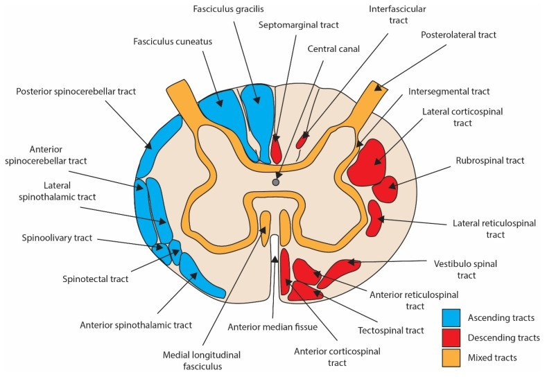
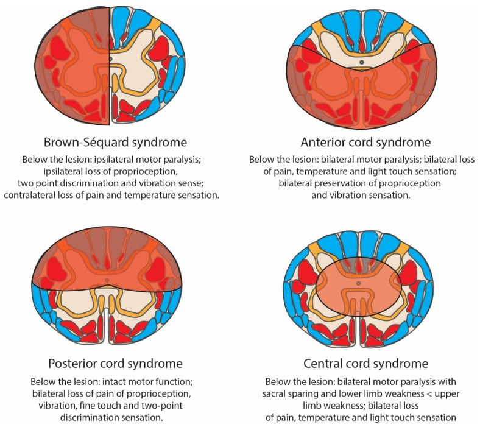
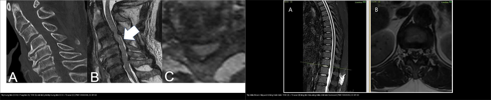
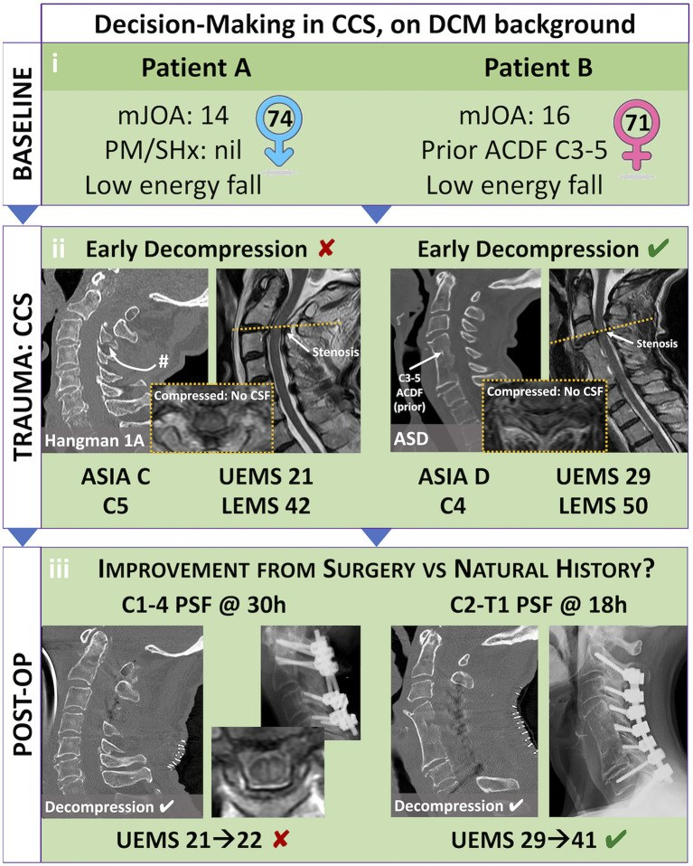
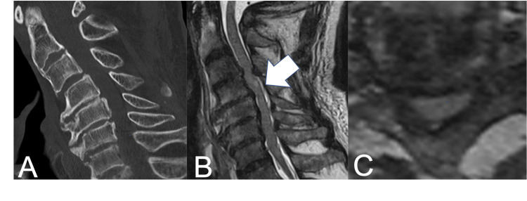
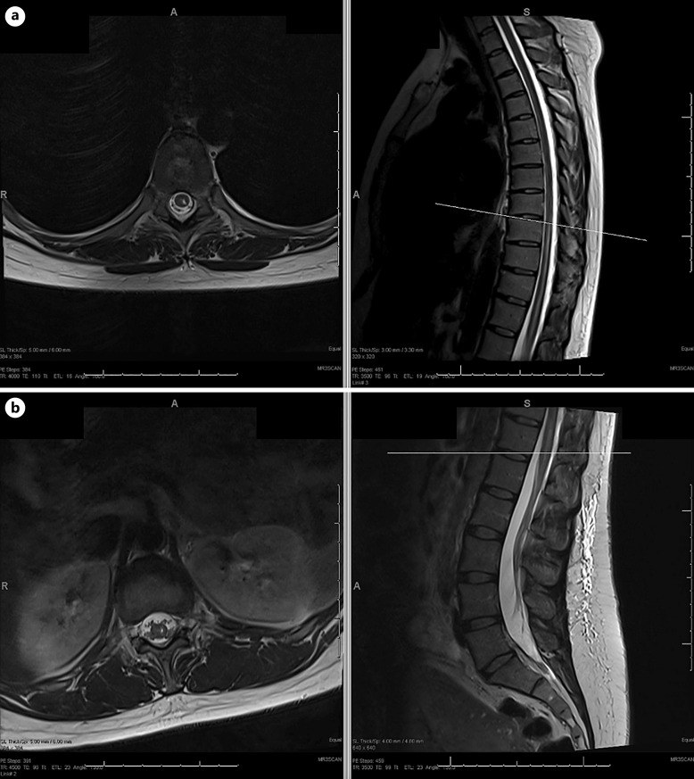
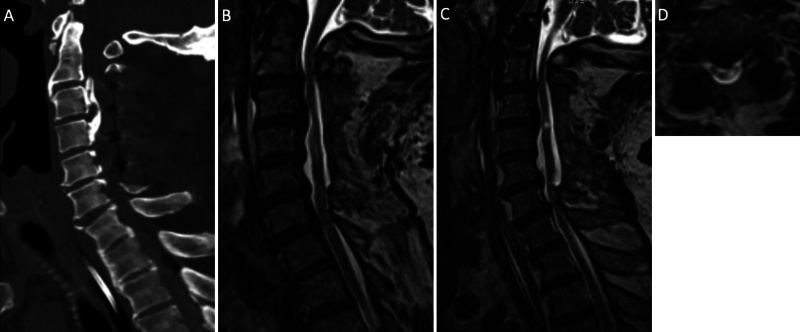
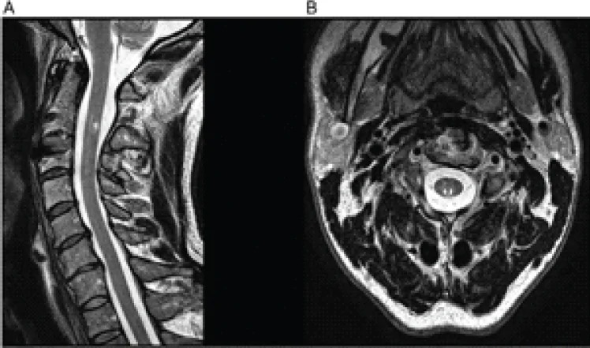

225 — Hội chứng tủy không hoàn toàn: tủy trung tâm, tủy trước, Brown-Séquard, tủy sau / Incomplete spinal cord syndromes
Tags: pattern:hoi-chung-tuy pattern:tuy-khong-hoan-toan vung:tuy-song score:ASIA protocol:MRI-cot-song protocol:CT-cot-song
Mức chắc chắn (certainty): tổng hợp y văn (literature synthesis) — tổng hợp từ bài tổng quan phân loại–điều trị SCI (McDearman JC et al., J Clin Med 2026, PMC13512939), bài tổng quan sinh lý bệnh neurotrauma (Stevens AR et al., Biomedicines 2024, PMC10968440), tổng quan tủy trung tâm (Martínez-Palacios K et al., Brain Spine 2025, PMC12166739) và các ca nguyên văn (verbatim case) giữ đúng tuổi – lâm sàng – chú thích gốc: tủy trung tâm (Katayama M et al., Cureus 2025, PMC12550345), tủy trước/Brown-Séquard không hoàn toàn (Kavya BT et al., Front Radiol 2025, PMC12620253), hội chứng động mạch tủy trước một bên (Kraus MJ & Nguyen J, Case Rep Neurol 2024, PMC11250075), Brown-Séquard (Torres J et al., J Neurosurg Case Lessons 2024, PMC11670128), tủy sau (Raj S et al., J Orthop Case Rep 2026, PMC13552138).
1. Tổng quan — vì sao mỗi hội chứng có "chân dung" riêng (giải phẫu + tưới máu)
- Tủy sống = chất xám trung tâm + chất trắng bao quanh. Chất trắng chia đường lên (ascending) và đường xuống (descending): cột sau (fasciculus gracilis/cuneatus) dẫn cảm giác sâu – rung – phân biệt hai điểm, bó spinothalamic (sừng sau → trước bên) dẫn đau – nhiệt, bó corticospinal (bên) dẫn vận động; chất xám có sừng trước (vận động, 2 neuron), sừng sau (cảm giác) và sừng bên (giao cảm). Vì các bó này chiếm các "ô" riêng trong mặt cắt ngang, mỗi vùng tổn thương cho một tổ hợp dấu hiệu khác nhau — đó là cơ sở của "hội chứng tủy không hoàn toàn".
- TẠI SAO phải phân biệt "không hoàn toàn" trước hết: "không hoàn toàn" theo ASIA/ISNCSCI (
223) là còn bảo tồn vùng cùng (sacral sparing): cảm giác S4–S5, cảm giác sâu hậu môn, co cơ hậu môn tự ý. Chỉ cần một trong ba → KHÔNG phải AIS A, tiên lượng khác hẳn (mổ/thuốc/theo dõi khác). Trên nền không hoàn toàn, kiểu phân bố khiếm khuyết mới chia thành các hội chứng dưới đây. - Hai "bản đồ" cùng lúc — somatotopy vs mạch máu (bài học lịch sử):
- Somatotopy: trong bó corticospinal cổ, sợi tới chi trên nằm TRONG (medial), tới chi dưới nằm NGOÀI (lateral) → tổn thương trung tâm dễ yếu tay hơn chân ("central cord"). Schneider 1954 mô tả vậy trên cơ chế tăng duỗi cổ (hyperextension) ở người hẹp ống.
- Mạch máu: tủy được cấp bởi một động mạch tủy trước (anterior spinal artery — ASA) cho 2/3 trước (sừng trước + corticospinal + spinothalamic) và hai động mạch tủy sau (posterior spinal artery) cho 1/3 sau (cột sau). Vùng phân thủy (watershed) là chỗ dễ tổn thương nhất khi tụt huyết áp / tắc mạch. Do đó cùng một "vùng trước" có thể do cả chèn ép lẫn thiếu máu — giải thích vì sao mô hình somatotopy kinh điển bị thách thức và cơ chế được mô tả lại (Stevens AR et al., Biomedicines 2024, PMC10968440).
- Chi tiết ASA: 78% nhánh tăng cường lớn nhất (động mạch Adamkiewicz) xuất phát bên TRÁI, phần lớn từ T8–L3 (hay gặp nhất T9–T12) — giải thích các nhồi máu một bên, không đối xứng (Kraus MJ & Nguyen J, Case Rep Neurol 2024, PMC11250075).
- Ngưỡng định lượng nằm lòng (theo PROMPT_SYNTHESIZER):
- Tủy trung tâm (central cord syndrome — CCS): hội chứng không hoàn toàn hay gặp nhất; tần suất 15–25% các ca SCI, ~11.000 ca/năm ở Mỹ; tiêu chuẩn hình thái lâm sàng Pouw: chênh điểm vận động chi trên – chi dưới ≥ 10 điểm; tuổi < 65 có khả năng đi lại không dụng cụ cao nhất (McDearman JC et al., J Clin Med 2026, PMC13512939; Martínez-Palacios K et al., Brain Spine 2025, PMC12166739).
- Tủy trước (anterior cord): nhồi máu tủy hay gặp nhất, chiếm ~1,2% của MỌI đột quỵ; tần suất ước tính 3,7/100.000 người; tử vong 9–23%; phục hồi vận động về mức nền là tối thiểu dù biểu hiện nhẹ (McDearman JC et al., PMC13512939; Martinez-Santori M et al., J Pediatr Rehabil Med 2024, PMC13292633).
- Brown-Séquard (hemisection):
11.000 ca mới/năm ở Mỹ; chiếm **4%** chấn thương tủy ở Na Uy; tiên lượng tốt nhất trong nhóm (phần lớn đi lại được) (McDearman JC et al., PMC13512939). - Tủy sau (posterior cord): không nằm trong các hội chứng ISNCSCI chính thức, tần suất báo cáo < 1%, thường bị bỏ sót vì không khám kỹ cột sau (Raj S et al., J Orthop Case Rep 2026, PMC13552138).
- Nón tủy (conus medullaris) ~1,5/1 triệu người; chùm đuôi ngựa (cauda equina) ~3,4/1 triệu người; chuyển hoàn toàn A→D chỉ 2,3% (McDearman JC et al., PMC13512939).
- Tủy trung tâm: ~90% phục hồi vận động trong 3 năm, không phụ thuộc vào cách điều trị (mổ hay bảo tồn); phục hồi theo trình tự dưới → trên, gần → xa (ascending, proximal-to-distal) (Martinez-Santori M et al., PMC13292633).
- Điểm "đọc ảnh phải nhớ": MRI thấy vùng tăng tín hiệu T2 trong tủy nhưng hội chứng được đặt tên theo LÂM SÀNG, không theo hình ảnh — ảnh chỉ định vị và loại trừ chèn ép (đĩa xương, máu tụ), còn Brown-Séquard/tủy trước/tủy sau là chẩn đoán lâm sàng – định khu.

Vì sao "ô" tổn thương quyết định chân dung: cột sau (fasciculus gracilis/cuneatus) = cảm giác sâu; bó spinothalamic trước-bên = đau–nhiệt; bó corticospinal bên = vận động; sừng trước = neuron vận động dưới. Stevens AR et al., Biomedicines 2024 (PMC10968440, Fig. 2), CC BY 4.0.2. Mẫu hình + chẩn đoán phân biệt theo mẫu hình (Gamut)
Đọc năm câu hỏi theo mặt cắt ngang (từ trước ra sau, từ trong ra ngoài) → gọi tên hội chứng:
- Yếu TAY > CHÂN + mất cảm giác/đau–nhiệt dưới mức (thường cổ, tăng duỗi trên nền hẹp ống): tủy trung tâm (central cord) — cơ chế trung tâm (chèn ép trước-sau + phù/xuất huyết trung tâm chất xám). Mất sừng trước cổ → teo cơ/tay "mềm nhất". Tiên lượng tốt nhất trong các tổn thương cổ nặng, hồi phục chân trước tay.
- Liệt hai bên (đối xứng) + MẤT đau–nhiệt hai bên + CÒN cảm giác sâu/rung: tủy trước (anterior cord / anterior spinal artery syndrome) — tổn thương 2/3 trước. Thường vascular (phẫu thuật ĐMC, tụt HA, thuyên tắc), đôi khi chèn ép trước cấp. Còn cột sau = chốt loại "tổn thương hoàn toàn".
- Mất vận động + cảm giác sâu CÙNG BÊN + mất đau–nhiệt ĐỐI BÊN (dị cảm phân ly): Brown-Séquard (hemisection) — do đâm/xuyên (vật nhọn, dao), hoặc u/chèn ép. Thêm Horner nếu tổn thương trên T1 (đường giao cảm mắt); mất cảm giác sâu → mất thăng bằng tư thế.
- Mất cảm giác sâu/rung/2 điểm HAI BÊN + CÒN vận động và đau–nhiệt: tủy sau (posterior cord) — tổn thương cột sau (thường do nhồi máu động mạch tủy sau, ít khi do chấn thương). Vì cột sau đôi khi chồng lấn đường giữa → mất cảm giác sâu có thể thay đổi theo mức; dễ bị bỏ sót nếu chỉ khám cảm giác đau/nhiệt.
- Liệt mềm hai chi dưới + bí tiểu + mất phản xạ, không đối xứng: chùm đuôi ngựa (cauda equina) — cấp cứu ngoại (nén rễ); đối xứng, rối loạn cơ vòng sớm, đau yên ngựa, giữ phản xạ: nón tủy (conus medullaris) — ranh giới lâm sàng hay chồng lấn, phân biệt chủ yếu để định hướng chèn ép rễ vs nhu mô tủy tận.
- Gợi nhớ "5 ô" — TC·Tr·BS·S·ĐN: Trung tâm (Tay > Chân) · Trước (mất đau–nhiệt, còn sâu) · Brown-Séquard (dị cảm phân ly) · Sau (mất sâu, còn vận động) · Đuôi ngựa/Nón tủy (rễ/vùng tận).

Brown-Séquard (hemisection: liệt vận động + mất sâu cùng bên, mất đau–nhiệt đối bên), tủy trước (liệt + mất đau–nhiệt hai bên, còn sâu), tủy sau (mất sâu/rung/2 điểm, còn vận động), tủy trung tâm (yếu tay > chân + mất cảm giác/đau–nhiệt dưới mức). Ảnh dùng cho mục đích học; hội chứng vẫn được chẩn đoán bằng LÂM SÀNG. Stevens AR et al., Biomedicines 2024 (PMC10968440, Fig. 3), CC BY 4.0.3. Bảng so sánh phân biệt (ma trận đối chiếu)
| Thực thể (entity) | Hình ảnh điển hình (CT/MRI) | Chốt vào (rule-in) | Chốt loại (rule-out) | Gợi ý xác nhận |
|---|---|---|---|---|
| Tủy trung tâm (central cord) | CT: hẹp ống đa tầng/OPLL, không gãy; T2W tăng tín hiệu trung tâm tủy cổ (C2–C6), axial thấy phù trung tâm chất xám | Yếu tay > chân + chênh UEMS–LEMS ≥ 10 điểm + T2 trung tâm tủy cổ | Tổn thương chỉ nửa tủy (mất đau–nhiệt đối bên) → Brown-Séquard | MRI cổ T2/STIR; đo chênh điểm vận động (Pouw); theo dõi hồi phục chân trước tay |
| Tủy trước (anterior cord / ASA) | T2W tăng tín hiệu đồng nhất 2/3 trước, "owl's eye"/hình chấm ở sừng trước; cột sau còn tối; có thể tăng tín hiệu mảnh hình bút chì ở trung tâm | Liệt + mất đau–nhiệt hai bên nhưng CÒN cảm giác sâu/rung | Mất luôn cảm giác sâu/rung → không phải tủy trước (nghĩ hoàn toàn/toàn bộ cắt ngang) | MRI toàn cột + DWI (nhạy thấp); loại trừ chèn ép trước cấp; bối cảnh phẫu thuật ĐMC/tụt HA |
| Brown-Séquard (hemisection) | T2W tăng tín hiệu MỘT bên hemicord (thường cổ/ngực trên); CT có thể bình thường hoặc thấy OPLL–chèn ép một bên | Dị cảm phân ly: yếu + mất sâu CÙNG bên, mất đau–nhiệt ĐỐI bên | Tăng tín hiệu lan cả hai nửa tủy → không còn là "hemisection" thuần | MRI T2/STIR; khám đủ cột sau; Horner nếu > T1 |
| Tủy sau (posterior cord) | T2W tăng tín hiệu giới hạn cột sau hai bên (axial: vùng sau rãnh giữa); thường không chèn ép | Mất cảm giác sâu/rung/2 điểm hai bên, CÒN vận động và đau–nhiệt | Có mất vận động hoặc mất đau–nhiệt → không phải tủy sau đơn thuần | MRI axial T2; bắt buộc khám rung âm thoa + 2 điểm (không thì bỏ sót) |
| Chùm đuôi ngựa vs nón tủy | MRI thắt lưng: nón tủy tăng tín hiệu khu trú tại đầu tủy vs chèn ép/nén rễ dưới mức đầu tủy; CT nếu gãy L1 | Bất đối xứng + đau rễ + yếu mềm một/nhiều rễ = đuôi ngựa; đối xứng + rối loạn cơ vòng sớm = nón tủy | Chỉ mất cảm giác yên ngựa đơn thuần, không yếu cơ → chưa chắc chèn ép rễ | MRI thắt lưng sớm (< 24–48 giờ khi có rối loạn cơ vòng/đau yên ngựa) |

*Trái — tủy trung tâm (CCS): (A) CT sagittal giữ thẳng, không gãy; (B) T2W tăng tín hiệu tủy trung tâm C3/4 (mũi tên); (C) T2 axial phù trung tâm. Phải — tủy trước/Brown-Séquard không hoàn toàn (nhồi máu nhánh sulcal): (A) T2W tăng tín hiệu phần trước tủy D12–L1; (B) T2 axial tăng tín hiệu sừng trước + vùng trung gian hemicord trái. Ảnh ghép letterbox giữ tỷ lệ. Katayama M et al., Cureus 2025 (PMC12550345, Fig. 1), CC BY 4.0 + Kavya BT et al., Front Radiol 2025 (PMC12620253, Fig. 1), CC BY 4.0.*Dấu hiệu đặc trưng cần đọc đúng
- "Tăng tín hiệu T2 trong tủy" chưa phải chẩn đoán: cùng một "đốm sáng" có thể là phù (edema), xuất huyết (hemorrhage) hay nhồi máu. Xem
223để phân biệt phù (T2 sáng, không blooming) vs xuất huyết (T2 tối + blooming GRE/SWI) — tiên lượng khác nhau. - Tín hiệu theo vị trí mới định hướng hội chứng: trung tâm (sừng xám giữa) → tủy trung tâm; 2/3 trước → tủy trước; một hemicord → Brown-Séquard; cột sau → tủy sau. Luôn đọc kèm axial — chỉ sagittal sẽ bỏ sót phân bố ngang.
- Nhồi máu nhánh sulcal (sulcal artery): biến thể của tủy trước, thường lệch một bên và biểu hiện như Brown-Séquard không hoàn toàn; MRI không ngấm thuốc (giúp loại viêm/u) (Kavya BT et al., Front Radiol 2025, PMC12620253).
4. Protocol chụp + thang ASIA & lưu đồ
- CT cột sống lát mỏng ≤ 1 mm + dựng 3D mọi chấn thương: loại trừ gãy–trật–mất vững (bài
221); nhưng CT bình thường KHÔNG loại trừ tổn thương tủy. - MRI toàn cột sống (whole-spine) T2W + STIR (± GRE/SWI) khi có dấu hiệu tủy hoặc CT bình thường mà lâm sàng tủy. Bắt buộc chuỗi axial T2 để định vị phân bố ngang (trung tâm/trước/một bên/sau). DWI tủy độ nhạy thấp, không thay thế T2.
- Chấm AIS (ASIA Impairment Scale) A–E — tiêu chuẩn hóa bằng ISNCSCI (
223); chốt "không hoàn toàn" = sacral sparing S4–5. Ghi mức thần kinh (NLI), điểm vận động chi trên/dưới (UEMS/LEMS) để tính chênh ≥ 10 điểm (tiêu chuẩn Pouw cho CCS). - Cấp cứu/huyết động: giữ MAP 85–90 mmHg trong 5–7 ngày; mổ giải ép sớm < 24 giờ ở người có chèn ép tồn lưu, mất vững, hoặc suy giảm thần kinh tiến triển (AANS/CNS; AO Spine). Corticoid (MPSS) KHÔNG khuyến cáo thường quy; nếu trong 8 giờ có thể bàn ca.
- Điểm khác biệt theo hội chứng khi quyết định mổ (từ y văn): với CCS không mất vững/không chèn ép nặng, bảo tồn (bất động, đảm bảo tưới máu tủy, phục hồi chức năng sớm) an toàn và hiệu quả; mổ ưu thế khi chèn ép cơ học, mất vững, hoặc khiếm khuyết tiến triển; tiếp cận trước (ACDF/corpectomy) cho chèn ép phía trước (đĩa thoát vị, OPLL), sau (laminectomy/laminoplasty) cho hẹp đa tầng (Katayama M et al., Cureus 2025, PMC12550345; Stevens AR et al., PMC10968440).

Hai bệnh nhân CCS trên nền DCM: (ii) cả hai có chèn ép + mất dịch não tủy quanh tủy (khung vàng); (iii) sau giải ép, UEMS 21→22 (kém) so với 29→41 nếu mổ sớm < 24 h. Trực quan hóa lý do "mổ sớm ở đúng bệnh nhân". Shakil H et al., Front Neurol 2023 (PMC10690824, Fig. 2), CC BY 4.0.flowchart TD
A[Chấn thương + khiếm khuyết tủy] --> B{Có bảo tồn vùng cùng S4-5?}
B -->|Không| C[AIS A: hoàn toàn - xem 223]
B -->|Có| D[Không hoàn toàn: định hướng theo mặt cắt ngang]
D --> E{Yếu tay > chân, chênh UEMS-LEMS >= 10?}
E -->|Có| F[Tủy TRUNG TÂM: CCS - hẹp ống/hyperextension]
E -->|Không| G{Mất đau-nhiệt 2 bên, CÒN cảm giác sâu?}
G -->|Có| H[Tủy TRƯỚC / ASA: nghĩ nhồi máu - loại trừ chèn ép trước]
G -->|Không| I{Mất sâu CÙNG bên + mất đau-nhiệt ĐỐI bên?}
I -->|Có| J[BROWN-SEQUARD: hemisection - khám đủ cột sau]
I -->|Không| K{Mất sâu/rung 2 bên, CÒN vận động?}
K -->|Có| L[Tủy SAU: hiếm, dễ bỏ sót]
K -->|Không| M{Rối loạn cơ vòng + yên ngựa, bất đối xứng?}
M -->|Có| N[Chùm đuôi ngựa: cấp cứu giải ép]
M -->|Không| O[Nón tủy hoặc thể hỗn hợp - MRI toàn cột số]
F --> P[MRI toàn cột + axial T2; chấm AIS; MAP 85-90]
H --> P
J --> P
L --> P
N --> P
O --> P
P --> Q{Chèn ép tồn lưu / mất vững / xấu dần?}
Q -->|Có| R[Giải ép sớm < 24 giờ]
Q -->|Không| S[Bảo tồn + phục hồi chức năng sớm]
5. Biến thể bình thường và cạm bẫy
- Cạm bẫy "hội chứng đặt tên theo ảnh": tên hội chứng là lâm sàng; MRI có thể bình thường sớm (đặc biệt tủy trung tâm nhẹ, SCIWORA — bài
223) hoặc không đặc hiệu. Đừng loại trừ hội chứng chỉ vì MRI "chưa thấy gì". - Bỏ sót tủy sau: vì mất cảm giác sâu/rung không gây đau và không cản trở "sức cơ", rất dễ bị bỏ qua nếu không khám âm thoa + phân biệt hai điểm. Tủy sau tần suất < 1% và thường dưới chẩn đoán (Raj S et al., PMC13552138).
- Lẫn "tủy trước" với "nhồi máu tủy trung tâm/nhánh sulcal" và với bệnh tủy khác: nhồi máu tủy khởi phát đột ngột, đau, không ngấm thuốc; viêm tủy/NMOSD (LETM ≥ 3 đốt sống, bài
215) thường ngấm thuốc và có bệnh cảnh viêm. Cần DWI/MRI + xét nghiệm để phân biệt. - Horner trong Brown-Séquard: có chỉ khi tổn thương trên T1. Dưới T1 vẫn có thể là hemisection điển hình (cạm bẫy "không Horner nên loại Brown-Séquard" là sai).
- Tăng tín hiệu tủy do artifact/chèn ép ngoài tủy: OPLL, đĩa thoát vị, giả phù do dịch chuyển — phải đối chiếu CT + GRE/SWI để không chẩn đoán nhầm "xuất huyết tủy".
- Phù tủy lan trên nhiều đốt do chèn ép: đôi khi lệch mức tín hiệu so với mức lâm sàng — đánh giá theo mức thần kinh lâm sàng, MRI chỉ bổ trợ.
- Hội chứng chồng lấn: nhiều ca không thuần một hội chứng (ví dụ đồng thời tủy trước + tủy trung tâm ở trẻ) — nêu đúng các thành phần thay vì gò ép vào một nhãn (Martinez-Santori M et al., PMC13292633).
6. Tự lượng giá — Blind Quiz (ảnh trơn ngoài, đáp án trong)
Ca 1 — Người lớn tăng duỗi cổ, yếu tay nhiều hơn chân, CT không gãy. Đọc CT + MRI:

- Gợi ý lâm sàng (clinical context): chấn thương năng lượng thấp, đau cổ, yếu chi trên ưu thế.
- Câu hỏi: Hình xương có gãy/mất vững không? Tín hiệu tủy ở đâu? Đặt tên hội chứng + bước xử trí?
Bấm để hiện đáp án (findings + chẩn đoán)
- Dấu hiệu (findings): (A) CT sagittal không gãy; (B) T2W tăng tín hiệu trung tâm tủy cổ (mũi tên); (C) axial phù trung tâm chất xám.
- Chẩn đoán (diagnosis): hội chứng tủy trung tâm (central cord syndrome) — yếu tay > chân, chênh UEMS–LEMS ≥ 10 điểm. Tiên lượng tốt (~90% phục hồi vận động trong 3 năm), hồi phục chân trước tay. Giữ MAP 85–90 mmHg; mổ nếu chèn ép tồn lưu/mất vững/xấu dần; còn lại bảo tồn + phục hồi chức năng.
- Nguồn ảnh: Katayama M et al., Cureus 2025 (PMC12550345, Fig. 1), CC BY 4.0.
Ca 2 — Sau phẫu thuật ĐMC, liệt hai chân đột ngột, cảm giác đau–nhiệt mất nhưng còn cảm giác rung. Đọc MRI T2:

- Gợi ý lâm sàng: biến chứng tụt HA/thao tác mạch, khiếm khuyết cảm giác phân ly.
- Câu hỏi: Tín hiệu tủy phân bố ở vùng nào của mặt cắt ngang? Hội chứng nào? Tiên lượng?
Bấm để hiện đáp án (findings + chẩn đoán)
- Dấu hiệu (findings): (a) axial T2 tăng tín hiệu hemicord/trước; (b) sagittal T2 tăng tín hiệu dọc tủy từ T8 tới nón tủy, cột sau còn bình thường.
- Chẩn đoán (diagnosis): hội chứng tủy trước / động mạch tủy trước (ASA) — mất đau–nhiệt, còn cảm giác sâu. Hay do tụt HA, phẫu thuật ĐMC; động mạch Adamkiewicz 78% bên trái, hay T9–T12. Phục hồi vận động tối thiểu; huyết động + phục hồi chức năng.
- Nguồn ảnh: Kraus MJ & Nguyen J, Case Rep Neurol 2024 (PMC11250075, Fig. 1), CC BY-NC 4.0 — nguyên bản.
Ca 3 — Chấn thương cổ, yếu một bên + mất cảm giác sâu cùng bên, mất đau–nhiệt đối bên. Đọc T2 axial (D) + sagittal:

- Gợi ý lâm sàng: tiền sử hẹp ống/OPLL, chấn thương kín cổ.
- Câu hỏi: Mô tả phân bố tín hiệu tủy trên axial (D)? Hội chứng? Vì sao phải khám cảm giác sâu?
Bấm để hiện đáp án (findings + chẩn đoán)
- Dấu hiệu (findings): (D) T2 axial tăng tín hiệu một nửa tủy (hemicord), phù hợp tổn thương nửa cắt ngang; kèm hình ảnh mổ giải ép (A–C).
- Chẩn đoán (diagnosis): Brown-Séquard (hemisection) — dị cảm phân ly; tiên lượng tốt nhất trong nhóm; cần khám đủ cột sau (rung/2 điểm) và tìm Horner nếu > T1.
- Nguồn ảnh: Torres J et al., J Neurosurg Case Lessons 2024 (PMC11670128, Fig. 4), CC BY-NC-ND 4.0 — nguyên bản, không crop/ghép.
Ca 4 — Sau chấn thương cổ, rối loạn cảm giác sâu/thăng bằng, còn vận động. Đọc MRI 1 năm:

- Gợi ý lâm sàng: giữ nguyên sức cơ nhưng đi đứng loạng choạng, dị cảm tay.
- Câu hỏi: Vùng tín hiệu bất thường trên axial (B) thuộc cột nào? Hội chứng nào và vì sao dễ bỏ sót?
Bấm để hiện đáp án (findings + chẩn đoán)
- Dấu hiệu (findings): axial T2 tại C3 cho thấy tổn thương khu trú cột sau (tăng tín hiệu vùng sau rãnh giữa), bảo tồn vận động và cảm giác đau–nhiệt.
- Chẩn đoán (diagnosis): hội chứng tủy sau (posterior cord syndrome) — tần suất < 1%, thường dưới chẩn đoán; chỉ phát hiện nếu khám rung âm thoa + phân biệt hai điểm. Không nằm trong 5 hội chứng ISNCSCI chính thức.
- Nguồn ảnh: Raj S et al., J Orthop Case Rep 2026 (PMC13552138, Fig. 3), CC BY-NC 4.0 — nguyên bản.
Ca 5 — Ảnh ghép: cùng nhìn "đốm sáng T2 trong tủy", phân biệt vị trí ngang.
- Câu hỏi: Mỗi bên tín hiệu nằm ở phần nào của mặt cắt ngang? Hai hội chứng gì? Khác nhau ở cảm giác nào bảo tồn?
Bấm để hiện đáp án (findings + chẩn đoán)
- Dấu hiệu (findings): trái — T2 trung tâm tủy cổ (C3/4) + hẹp ống; phải — T2 2/3 trước/hemicord sừng trước tại D12–L1.
- Chẩn đoán (diagnosis): trái = tủy trung tâm (CCS) (yếu tay > chân,
còncảm giác sâu); phải = tủy trước / Brown-Séquard không hoàn toàn (nhánh sulcal,mấtđau–nhiệt, còn sâu). Phân biệt dựa vào phân bố ngang trên axial + khám cảm giác. - Nguồn ảnh: Katayama M et al., Cureus 2025 (PMC12550345, CC BY) + Kavya BT et al., Front Radiol 2025 (PMC12620253, CC BY); ảnh ghép letterbox giữ tỷ lệ.
Bài liên quan chéo
- 200 – Tổng quan Hệ Thần kinh (bảng DDx)
- 223 – Chấn thương tủy sống: thang ASIA & SCIWORA (sacral sparing; phù vs xuất huyết tủy)
- 221 – Chấn thương cột sống (3 cột Denis, TLICS)
- 220 – Ống sống 3 khoang (ngoài màng cứng vs trong màng vs nội tủy)
- 215 – Bệnh lý mất myelin (MS/NMOSD/ADEM) (viêm tủy cắt ngang LETM ≥ 3 đốt)
- 222 – Viêm đốt sống (Pott vs vi khuẩn vs di căn)
Ảnh
images/225_tuy-tracts_Schema_PMC10968440-Fig2-CCBY.jpg— sơ đồ bó đường tủy (CC BY 4.0).images/225_tuy-khong-hoan-toan_Schema_PMC10968440-Fig3-CCBY.jpg— sơ đồ 4 hội chứng không hoàn toàn (CC BY 4.0).images/225_tuy-trung-tam_CT-MRI_PMC12550345-Fig1-CCBY.jpg— CCS: CT + T2W (CC BY 4.0).images/225_tuy-trung-tam_CT-MRI_PMC10690824-Fig2-CCBY.jpg— ca minh họa chọn bệnh nhân, mổ sớm < 24 h (CC BY 4.0).images/225_tuy-truoc_MRI_PMC12620253-Fig1-CCBY.jpg— tủy trước/Brown-Séquard không hoàn toàn (CC BY 4.0).images/225_tuy-truoc-dong-mach_MRI_PMC11250075-Fig1-CCBYNC.jpg— hội chứng động mạch tủy trước một bên (CC BY-NC 4.0, nguyên bản).images/225_brown-sequard_MRI_PMC11670128-Fig4-CCBYNCND.jpg— Brown-Séquard (CC BY-NC-ND 4.0, nguyên bản, không crop/ghép).images/225_tuy-sau_MRI_PMC13552138-Fig3-CCBYNC.jpg— hội chứng tủy sau (CC BY-NC 4.0, nguyên bản).images/composite_225_tuy-trung-tam-vs-tuy-truoc.jpg— ảnh ghép đối chiếu trung tâm vs trước (chỉ ghép ảnh CC BY).- Nguồn + giấy phép đầy đủ:
images/CREDITS.md; link gốc:sources.md.
Không dùng để chẩn đoán độc lập khi chưa có người hướng dẫn.